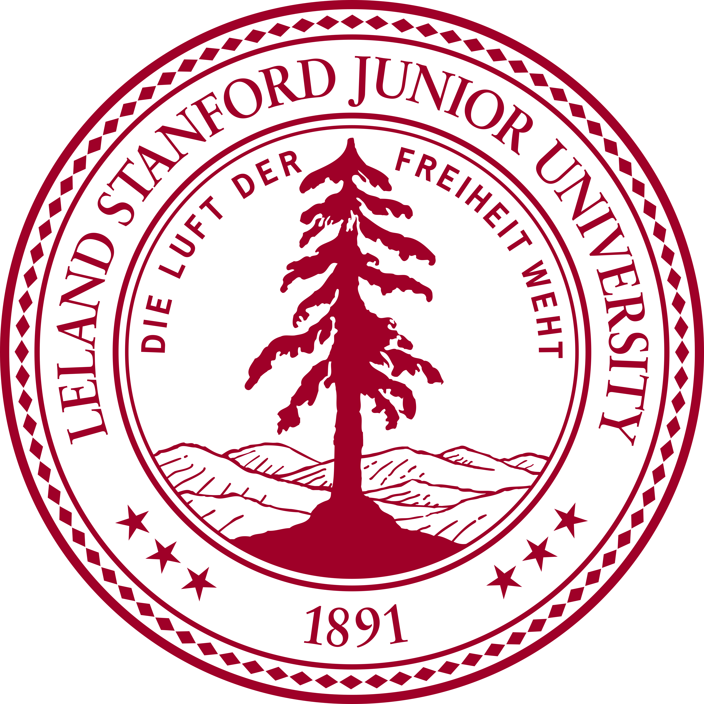
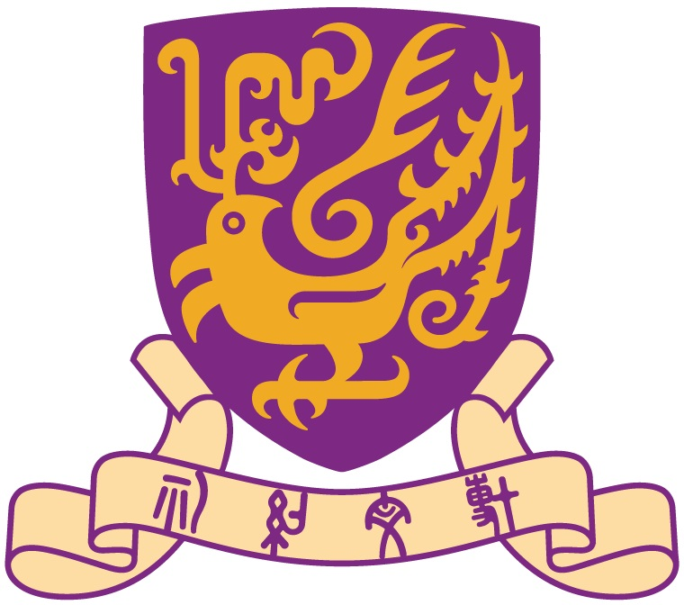

Education

Jan. 2025 - Present
Stanford University. Palo Alto, CA
Postdoctoral Scholar at Stanford AIMI
Sept. 2019 - Dec. 2024
Rutgers, The State University of New Jersey. Piscataway, NJ
Ph.D. in Computer Science
- Supervised by Distinguished Prof. Dimitris N. Metaxas

Sept. 2017 - Nov. 2018
The Chinese University of Hong Kong. Central Ave, Hong Kong
M.S. in Electronic Engineering
- Supervised by Prof. Hongsheng Li
Sept. 2013 - Jul. 2017
University of Science and Technology of China, Hefei, China
B.Eng. in Automation
Experience
Feb. 2024 - Nov. 2024
Cloud + AI, Microsoft. Remote
Part-time Research Scientist Intern.
- Medical imaging foundation models
Jun. 2023 - Sep. 2023
Deep Engine Science, AWS. Santa Clara, CA, USA
Applied Scientist Intern. Host: Dr. Boran Han and Dr. Zhiqiang Tang
- Large-scale dataset distillation via purified pretraining model
June 2022 - Sep. 2022
Deep Engine Science, AWS. Santa Clara, CA, USA
Applied Scientist Intern. Host: Dr. Xingjian Shi and Dr. Yi Zhu
- Data-efficient test-time domain adaptation via visual prompt tuning
Sept. 2019 - Dec. 2024
Computer Science Department, Rutgers University. Piscataway, NJ, USA
Research Assistant. Supervised by Prof. Dimitris N. Metaxas
- Knowledge-driven models for explainable diagnosis
- Foundation medical image segmentation models
- Improving model robustness against distribution shift
- Medical image segmentation via vision transformer
- Data-efficient learning via automatic data augmentation for natural and medical images
- Shape regularization in medical image segmentation